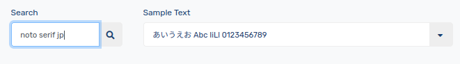
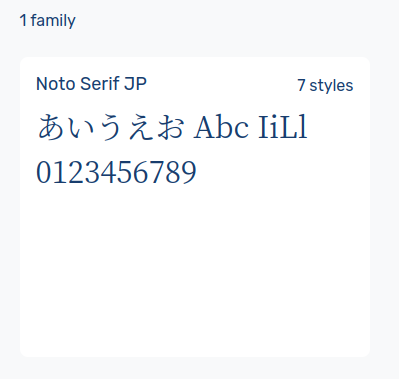
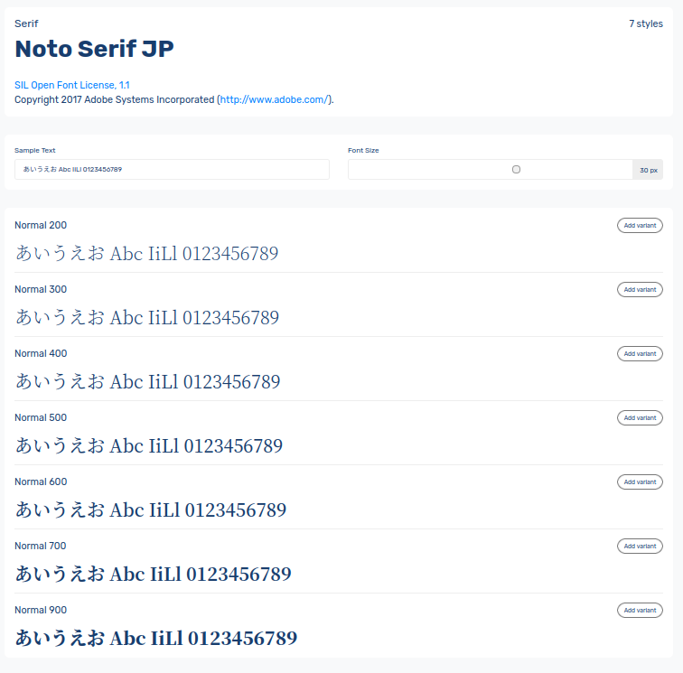
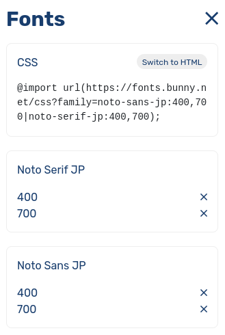

Google Fonts から Bunny Fonts に乗り換える

EU 圏に Bunny Fonts という Web フォントの CDN サービスがあるそうな。
With a zero-tracking and no-logging policy, Bunny Fonts helps you stay fully GDPR compliant and puts your user’s personal data into their own hands. Additionally, you can enjoy lightning-fast load times thanks to bunny.net’s global CDN network to help improve SEO and deliver a better user experience.
素晴らしい！ 早速試してみることにした。 まずは日本語混じりサンプルテキストを用意して NOTO Serif JP フォントを探してみる。

Bunny Fonts
おー，あるやないかい！

Bunny Fonts
詳細を眺めてみると

Bunny Fonts
という感じに複数のウェイトが用意されているのが分かる。
画面右側の [Add variant] ボタン押下でインポートするフォント・ウェイトを選択する。
ちなみに目安としては
| ウェイト | 名称 |
|---|---|
| 200 | ExtraLight |
| 300 | Light |
| 400 | Regular |
| 500 | Medium |
| 600 | SemiBold |
| 700 | Bold |
| 900 | Black |
といった感じ。 通常の文章であれば 400 と 700 があれば十分だろう。
NOTO Sans JP フォントでも同様にフォント・ウェイトを選択する。
画面右上の [Fonts+] ボタンを押下すると

Bunny Fonts
という感じに選択したフォント・ウェイトが一覧表示される。 上部の
@import url(https://fonts.bunny.net/css?family=noto-sans-jp:400,700|noto-serif-jp:400,700);
のコードを CSS ファイルのどこかに書いておけば Web フォントの情報がインポートされる。
また [Switch to HTML] ボタン押下で
<link rel="preconnect" href="https://fonts.bunny.net">
<link href="https://fonts.bunny.net/css?family=noto-sans-jp:400,700|noto-serif-jp:400,700" rel="stylesheet" />
と HTML の <link> 要素の表現に切り替わるので，これを HTML ファイルの <head> に組み込んでもよい。
この URL の中身を覗いてみると
/* japanese */
@font-face {
font-family: 'Noto Serif JP';
font-style: normal;
font-weight: 400;
src: url(https://fonts.bunny.net/noto-serif-jp/files/noto-serif-jp-japanese-400-normal.woff2) format('woff2'), url(https://fonts.bunny.net/noto-serif-jp/files/noto-serif-jp-japanese-400-normal.woff) format('woff');
}
/* latin */
@font-face {
font-family: 'Noto Serif JP';
font-style: normal;
font-weight: 400;
src: url(https://fonts.bunny.net/noto-serif-jp/files/noto-serif-jp-latin-400-normal.woff2) format('woff2'), url(https://fonts.bunny.net/noto-serif-jp/files/noto-serif-jp-latin-400-normal.woff) format('woff');
}
てな感じになっている。
どうやら Google Fonts のようにファイル分割はされないようだ。
しかも font-display プロパティも設定されないので日本語フォントのようにグリフ数が多いものはちょっと不利かも知れない。
まぁ，ちょっとでも (個人のプライバシーに敵対的な) Google 依存を減らしたいのであれば Bunny Fonts は悪くない選択肢だと思う。 というわけで，うちのサイトは Bunny Fonts で統一することにした。 でも，まだ，フォントに関しては Font Awesome への依存があるので完全に追跡を振り切ってるわけでもないんだけどね。